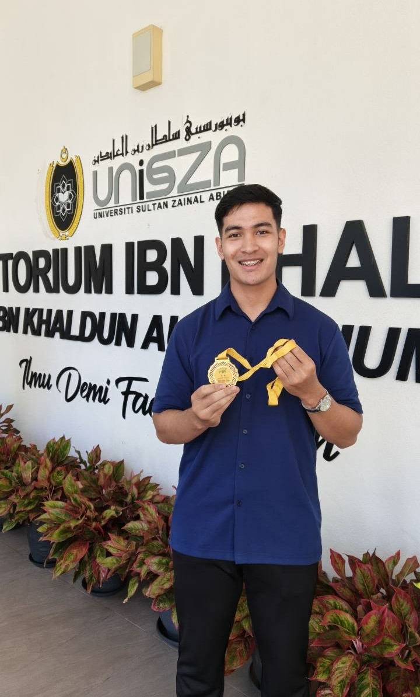
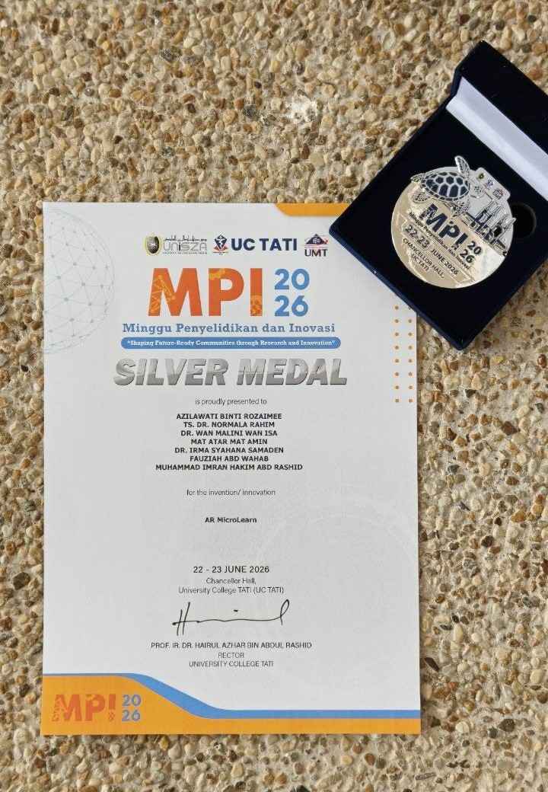

Final Year Project Showcase
Universiti Sultan Zainal Abidin
AR MicroLearn, degree final-year project.
Academic recognition, professional training, and learning through practice.

Universiti Sultan Zainal Abidin
AR MicroLearn, degree final-year project.

MPI 2026
AR MicroLearn, the same degree final-year project presented at the UniSZA showcase.
Data modeling and interactive dashboards.
Independent research into IaaS/PaaS cloud security and Blue-Green deployment strategies.
Configured multi-recipient signature routing in Adobe Acrobat.
Prepared Cat5e and Cat6 Ethernet cables, terminated RJ45 connectors, and tested the finished connections.
Routed and bundled Ethernet cables in server racks, terminated patch-panel connections, and traced cable runs.
Practiced setting up PHP and Composer, configuring a local database connection, and running Laravel locally.
Practiced setting up Node.js and npm, installing project dependencies, and running a React development server.